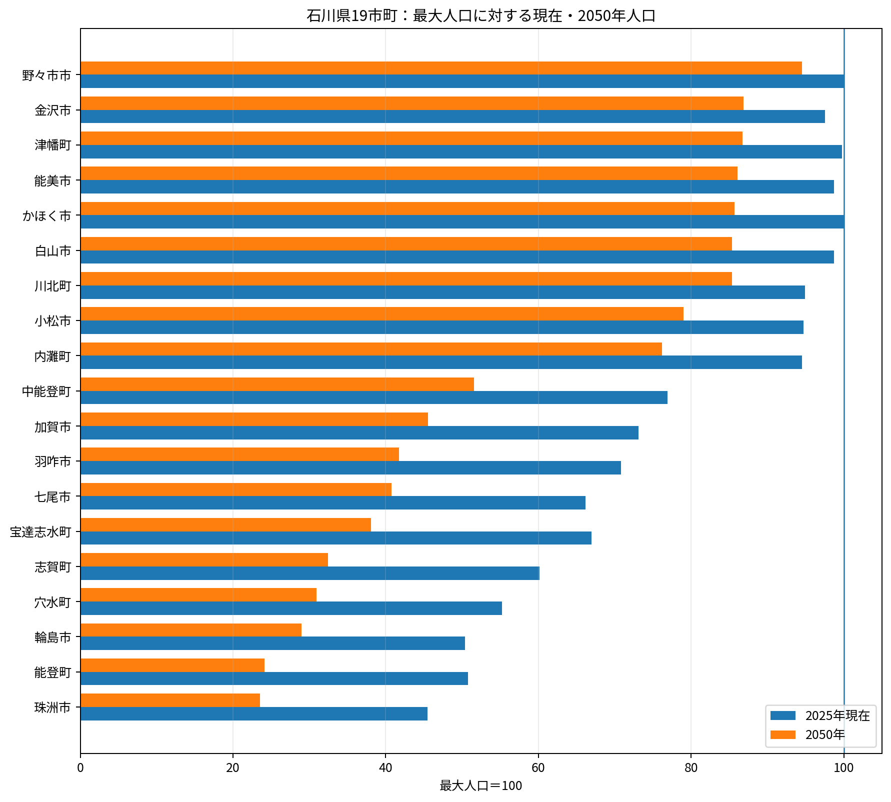
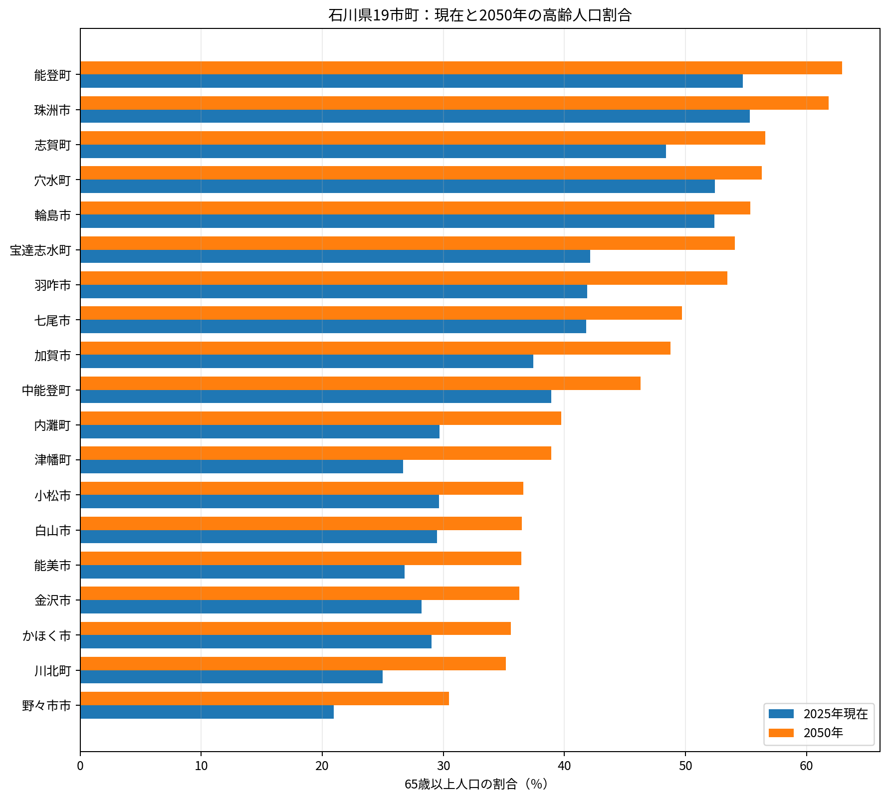
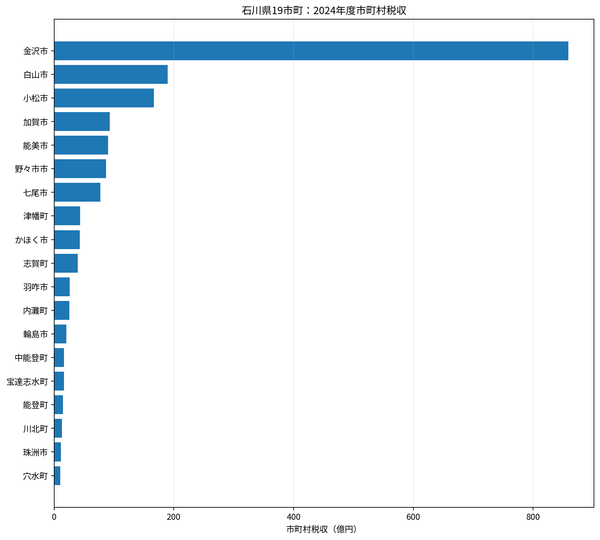
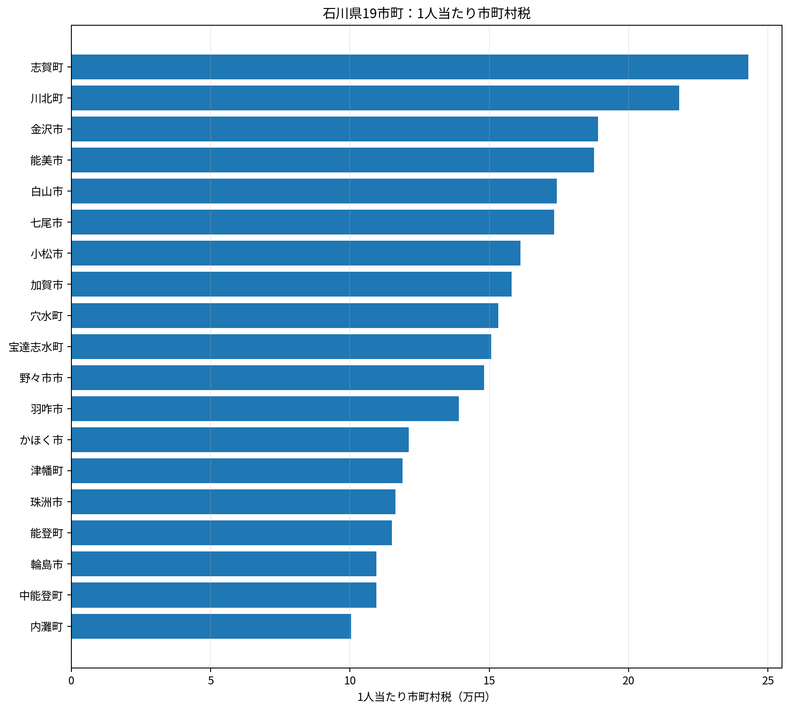
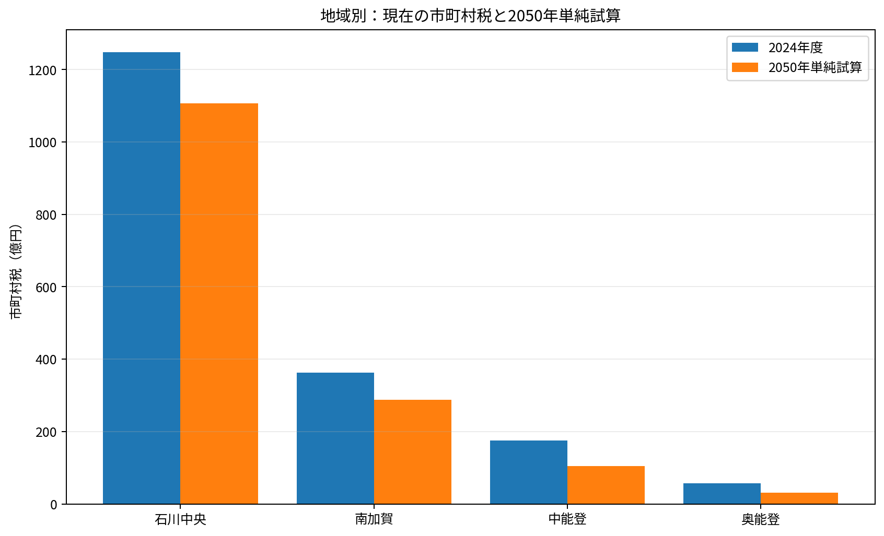
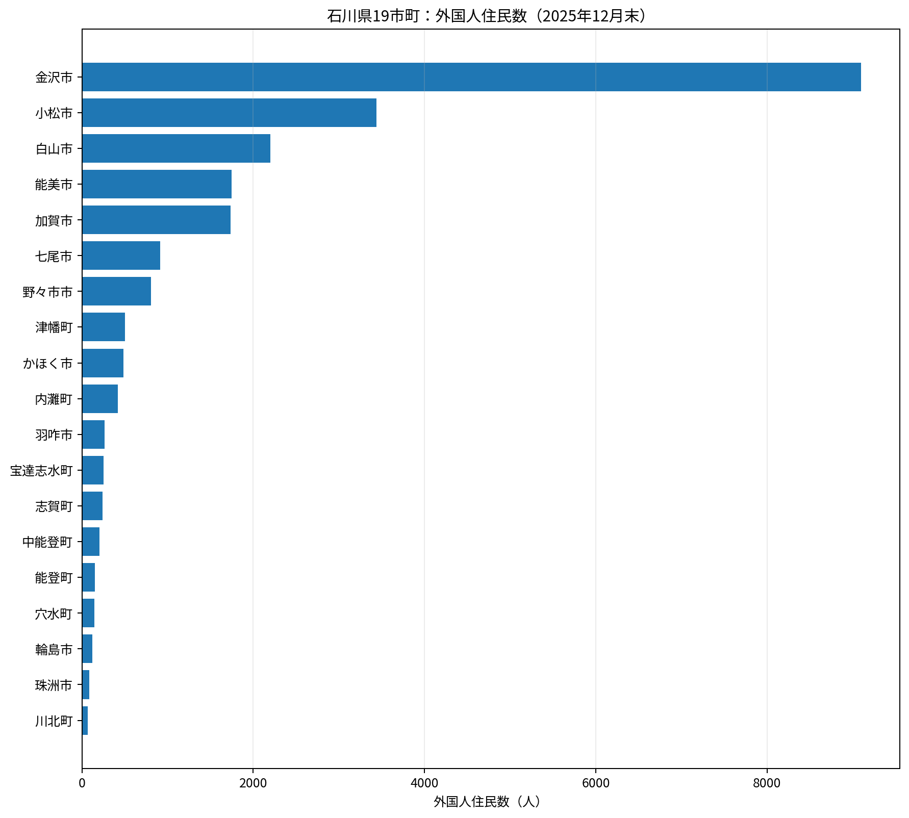
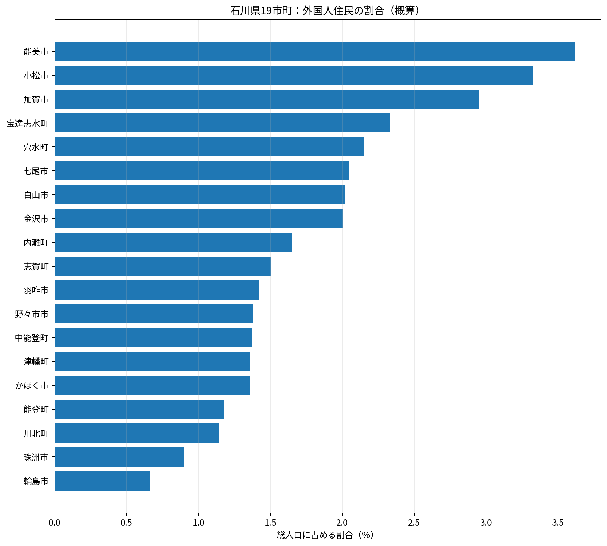
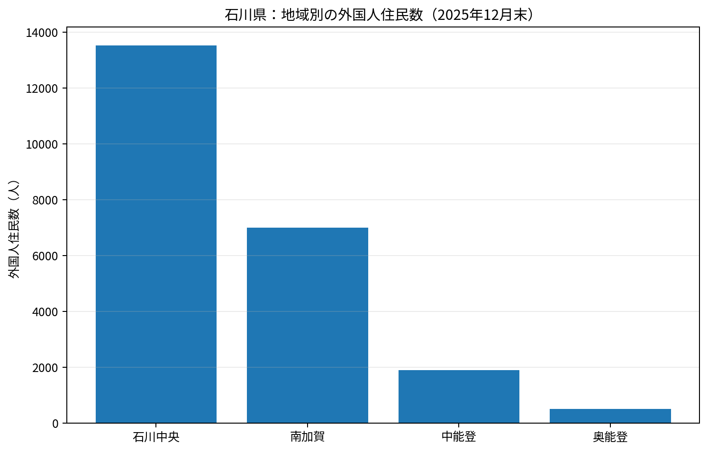
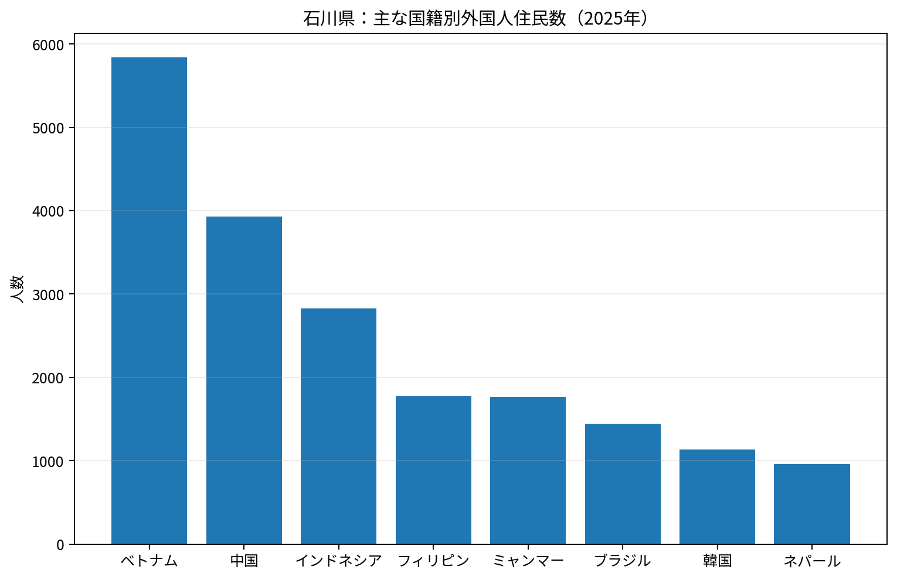

NOTO EARTHQUAKE AND POPULATION
能登半島地震後の人口減少をどう見るか
石川県の人口減少は県内一様ではなく、特に輪島市、珠洲市、穴水町、能登町からなる奥能登で深刻です。奥能登は地震前から人口減少と高齢化が進んでいましたが、2024年の能登半島地震とその後の豪雨により、住宅被害、長期避難、事業所の休廃業、医療・介護や買い物環境の縮小が重なり、若い世代や子育て世帯を中心とした地域外への転出が加速しました。
一方で、住民票を移さず県内外で避難生活を続ける人や、復旧工事のため一時的に地域へ入る人もいるため、統計上の人口だけでは実際の居住状況や昼間人口を完全には表せません。今後の人口は、住宅再建の速度、道路・上下水道の復旧、医療・福祉・商店・学校の維持、漁業・農業・観光・伝統産業などのなりわい再建によって大きく左右されます。
このページでは2025年人口と2050年将来人口を同じ尺度で比較しています。ただし、2050年推計は地震後の人口流出を完全には織り込んでいない可能性があり、流出が長期化すれば奥能登の実際の人口が推計を下回ることも考えられます。逆に、復興住宅、産業再建、二地域居住、移住・関係人口の取り組みが進めば、減少幅を抑えられる可能性もあります。
石川県の人口は、国勢調査で確認できる範囲では2000年の 1,180,977人が最大で、2025年10月現在 1,089,858人、2050年 896,801人になる見込みである。
同時に年代構成も変わる。県全体の65歳以上人口の割合は、現在の 31.1% から2050年には 38.3% へ上昇し、生産年齢人口の割合は 57.6% から 51.5% へ低下する。
2024年度の県内19市町の市町村税は合計 1843.7億円。人口だけを連動させた単純試算では、2050年は 1529.2億円 となる。
外国人住民は2025年12月末で 22,892人、概算で総人口の 2.1% に当たる。石川県の人口減少を下支えする存在としても重要になっている。
人口ピークの扱い：市町別の最大人口は、現在の市町境界にそろえた1995～2020年の国勢調査と、2025年10月人口を比較したもの。1995年より前から減少している市町では、実際のピークがさらに以前の可能性がある。
税収試算の扱い：2050年税収は公式予測ではない。2024年度の市町村税を2025年人口で割った1人当たり税収が続くと仮定し、2050年人口を掛けた単純試算である。
外国人住民割合の扱い：外国人住民数は2025年12月末、総人口は2025年10月1日のため、割合は概算値。
人口のピーク・現在・2050年

人口の縮小段階を比較。

65歳以上の割合。2025年実績推計と2050年将来推計。
税収の現在と2050年単純試算

現在の市町村税収。

2024年度市町村税を2025年人口で除した概算。

2050年税収は人口だけを連動させた参考値。外国人住民の動向
石川県の外国人住民は2025年12月末で 22,892人。人数では金沢市が最も多いが、総人口に占める割合では能美市、小松市、加賀市などが高い。製造業、留学、観光、介護など、地域ごとに役割が異なる。

2025年12月末の外国人住民数。

総人口に占める割合（概算）。

地域別の外国人住民数。

ベトナム、中国、インドネシアなどが多い。
| 市町 | 外国人住民数 | 総人口比 | 2024→2025増減（把握分） |
|---|
| 金沢市 | 9,094 | 2.0% | +1,096 |
| 小松市 | 3,436 | 3.3% | +196 |
| 白山市 | 2,203 | 2.0% | +193 |
| 能美市 | 1,746 | 3.6% | +171 |
| 加賀市 | 1,735 | 3.0% | +162 |
| 七尾市 | 913 | 2.0% | +98 |
| 野々市市 | 808 | 1.4% | +100 |
| 津幡町 | 502 | 1.4% | +102 |
| 主な国籍 | 2025年 | 前年差 |
|---|
| ベトナム | 5,839 | +435 |
| 中国 | 3,931 | +59 |
| インドネシア | 2,824 | +800 |
| フィリピン | 1,770 | +134 |
| ミャンマー | 1,768 | +534 |
| ブラジル | 1,440 | -147 |
| 韓国 | 1,133 | -4 |
| ネパール | 962 | +240 |
| 主な在留資格 | 人数 |
|---|
| 技能実習 | 5,880 |
| 特定技能 | 3,701 |
| 永住者 | 3,458 |
| 留学 | 2,833 |
| 技術・人文知識・国際業務 | 1,610 |
19市町一覧
| 市町 | 最大年 | 最大人口 | 2025人口 | 2050人口 | 現在65歳以上 | 2050年65歳以上 | 2024税収 | 外国人住民 | 外国人割合 |
|---|
| 金沢市 | 2015 | 465,699 | 454,163 | 404,449 | 28.2% | 36.3% | 858.8億円 | 9,094 | 2.0% |
| 七尾市 | 1995 | 67,368 | 44,555 | 27,443 | 41.8% | 49.7% | 77.2億円 | 913 | 2.0% |
| 小松市 | 2005 | 109,084 | 103,332 | 86,175 | 29.7% | 36.6% | 166.5億円 | 3,436 | 3.3% |
| 輪島市 | 1995 | 37,133 | 18,708 | 10,754 | 52.4% | 55.3% | 20.5億円 | 124 | 0.7% |
| 珠洲市 | 1995 | 21,580 | 9,812 | 5,083 | 55.3% | 61.8% | 11.4億円 | 88 | 0.9% |
| 加賀市 | 1995 | 80,333 | 58,747 | 36,571 | 37.4% | 48.8% | 92.8億円 | 1,735 | 3.0% |
| 羽咋市 | 1995 | 26,502 | 18,759 | 11,063 | 41.9% | 53.4% | 26.1億円 | 267 | 1.4% |
| かほく市 | 現在 | 35,517 | 35,517 | 30,439 | 29.0% | 35.6% | 43.0億円 | 483 | 1.4% |
| 白山市 | 2010 | 110,459 | 109,024 | 94,293 | 29.5% | 36.5% | 189.9億円 | 2,203 | 2.0% |
| 能美市 | 2015 | 48,881 | 48,260 | 42,084 | 26.8% | 36.4% | 90.5億円 | 1,746 | 3.6% |
| 野々市市 | 現在 | 58,560 | 58,560 | 55,360 | 20.9% | 30.5% | 86.8億円 | 808 | 1.4% |
| 川北町 | 2015 | 6,347 | 6,023 | 5,418 | 25.0% | 35.2% | 13.1億円 | 69 | 1.1% |
| 津幡町 | 2015 | 36,968 | 36,880 | 32,050 | 26.7% | 38.9% | 43.8億円 | 502 | 1.4% |
| 内灘町 | 2015 | 26,987 | 25,507 | 20,566 | 29.7% | 39.7% | 25.6億円 | 420 | 1.6% |
| 志賀町 | 1995 | 26,965 | 16,219 | 8,740 | 48.4% | 56.6% | 39.4億円 | 244 | 1.5% |
| 宝達志水町 | 1995 | 16,409 | 10,986 | 6,245 | 42.1% | 54.1% | 16.6億円 | 256 | 2.3% |
| 中能登町 | 1995 | 19,716 | 15,164 | 10,166 | 38.9% | 46.3% | 16.6億円 | 208 | 1.4% |
| 穴水町 | 1995 | 12,053 | 6,655 | 3,729 | 52.4% | 56.3% | 10.2億円 | 143 | 2.1% |
| 能登町 | 1995 | 25,590 | 12,987 | 6,173 | 54.7% | 62.9% | 14.9億円 | 153 | 1.2% |
REGION
石川中央
2025年人口 719,651人 → 2050年 637,157人。外国人住民は 13,510人。
確認できる最大人口465,699人2015年
→
現在人口454,163人2025年10月
→
2050年人口404,449人現在比 -10.9%
市町の特徴
県都・商業観光・文化機械・IT加賀野菜
県人口シェア41.7%2025年・県内1位
2050年シェア45.1%県内人口の集中度は今後高まる見込み
65歳以上28.2% → 36.3%2025年 → 2050年
産業・企業：県庁所在地で、商業、医療・福祉、教育、観光などのサービス業が集積する。機械・IT分野では澁谷工業、アイオーデータなどの本社が立地し、伝統工芸も地域経済の柱。
農林水産・観光：五郎島金時、加賀れんこん、すいかなどの都市近郊農業が特徴。
イベント・学校・合併・防災指定
主なイベント
金沢百万石まつり金沢マラソン金沢JAZZ STREET
開催時期・実施状況は年度や災害復旧状況により変わる。
主な学校
金沢大学金沢美術工芸大学金沢泉丘高等学校金沢二水高等学校
大学・高校を優先し、該当しない町では中学校等を代表例として掲載。
市町村合併平成の大合併なし
出身・ゆかりの著名人
代表例
文化
泉鏡花
小説家
芸能
鹿賀丈史
俳優
芸能
井上あずみ
歌手
スポーツ
松本薫
柔道家
現在の市町域（合併前の旧市町村を含む）の出身者を中心に掲載。
「ゆかり」と記した人物は、出生地以外でも地域との結び付きが特に強い人物。
肩書きは分かりやすく簡略化している。
土砂災害防止法
559区域
土石流 230
地すべり 82
急傾斜地 247
土砂災害（特別）警戒区域。2025年11月4日現在。
砂防三法の指定地
158箇所
砂防指定地 106
地すべり防止 13
急傾斜危険区域 39
国土交通省所管の法指定地。2026年3月24日現在。
※土砂災害警戒区域と砂防三法の指定地は、目的・指定基準・数え方が異なるため、件数を直接比較するものではない。
年齢3区分（総人数を反映・同じ基準線）
2025年から2050年に10.9%減少
2本とも同じ縮尺・同じ基準線
454,163人
340,622人
227,082人
113,541人
0人
総人口 454,163人
266,242人
60.5%
124,134人
28.2%
2025年
- 0～14歳49,606人11.3%
- 15～64歳266,242人60.5%
- 65歳以上124,134人28.2%
- 年齢不詳14,181人3.1%
総人口 404,449人
216,602人
53.6%
146,645人
36.3%
2050年
- 0～14歳41,202人10.2%
- 15～64歳216,602人53.6%
- 65歳以上146,645人36.3%
棒の高さが総人口、色分けが年齢構成。2025年は年齢不詳14,181人を含む。
2024年度 市町村税858.8億円1人当たり 18.9万円
2050年 税収単純試算764.8億円現在の1人当たり税収が続いた場合
外国人住民 9,094人（概算 2.0%）／2024→2025年 +1,096人
確認できる最大人口35,517人現在
→
現在人口35,517人2025年10月
→
2050年人口30,439人現在比 -14.3%
県人口シェア3.3%2025年・県内9位
2050年シェア3.4%県人口に占める比重はおおむね横ばい
65歳以上29.0% → 35.6%2025年 → 2050年
産業・企業：金沢通勤圏として人口が比較的安定し、IT・電子と繊維産業が特徴。PFUの石川本社・開発生産拠点が立地する。
農林水産・観光：高松ぶどう、米、砂丘地を利用した野菜などの農業が行われる。
イベント・学校・合併・防災指定
主なイベント
かほく四季まつりサマーフェスタinかほくかほく市制記念イベント
開催時期・実施状況は年度や災害復旧状況により変わる。
主な学校
石川県立看護大学宇ノ気中学校河北台中学校
大学・高校を優先し、該当しない町では中学校等を代表例として掲載。
市町村合併2004年：高松町＋七塚町＋宇ノ気町
出身・ゆかりの著名人
代表例
学術
西田幾多郎
哲学者
スポーツ
奥川恭伸
プロ野球選手
芸能
宮崎由加
歌手・タレント
スポーツ
山瀬慎之助
プロ野球選手
現在の市町域（合併前の旧市町村を含む）の出身者を中心に掲載。
「ゆかり」と記した人物は、出生地以外でも地域との結び付きが特に強い人物。
肩書きは分かりやすく簡略化している。
土砂災害防止法
44区域
土石流 12
地すべり 2
急傾斜地 30
土砂災害（特別）警戒区域。2025年11月4日現在。
砂防三法の指定地
14箇所
砂防指定地 7
地すべり防止 0
急傾斜危険区域 7
国土交通省所管の法指定地。2026年3月24日現在。
※土砂災害警戒区域と砂防三法の指定地は、目的・指定基準・数え方が異なるため、件数を直接比較するものではない。
年齢3区分（総人数を反映・同じ基準線）
2025年から2050年に14.3%減少
2本とも同じ縮尺・同じ基準線
35,517人
26,638人
17,758人
8,879人
0人
総人口 35,517人
5,028人
14.2%
20,021人
56.7%
10,246人
29.0%
2025年
- 0～14歳5,028人14.2%
- 15～64歳20,021人56.7%
- 65歳以上10,246人29.0%
- 年齢不詳222人0.6%
総人口 30,439人
3,778人
12.4%
15,829人
52.0%
10,832人
35.6%
2050年
- 0～14歳3,778人12.4%
- 15～64歳15,829人52.0%
- 65歳以上10,832人35.6%
棒の高さが総人口、色分けが年齢構成。2025年は年齢不詳222人を含む。
2024年度 市町村税43.0億円1人当たり 12.1万円
2050年 税収単純試算36.9億円現在の1人当たり税収が続いた場合
外国人住民 483人（概算 1.4%）
確認できる最大人口110,459人2010年
→
現在人口109,024人2025年10月
→
2050年人口94,293人現在比 -13.5%
県人口シェア10.0%2025年・県内2位
2050年シェア10.5%県内人口の集中度は今後高まる見込み
65歳以上29.5% → 36.5%2025年 → 2050年
産業・企業：県内第2位の人口規模を持ち、国道8号沿線や工業団地に製造・物流企業が集積する。EIZO本社など、研究開発と生産機能を持つ企業が立地。
農林水産・観光：米、なし、トマト、ブロッコリー、白ねぎなど、手取川扇状地を生かした農業が盛ん。
イベント・学校・合併・防災指定
主なイベント
ほうらい祭り白峰若葉まつり白山白川郷ウルトラマラソン
開催時期・実施状況は年度や災害復旧状況により変わる。
主な学校
金城大学金城大学短期大学部松任高等学校翠星高等学校
大学・高校を優先し、該当しない町では中学校等を代表例として掲載。
市町村合併2005年：松任市＋美川町＋鶴来町＋河内村＋吉野谷村＋鳥越村＋尾口村＋白峰村
出身・ゆかりの著名人
代表例
文化
本谷有希子
劇作家・小説家
芸能
浅川マキ
歌手
芸能
西垣匠
俳優
政治
奥田敬和
政治家
現在の市町域（合併前の旧市町村を含む）の出身者を中心に掲載。
「ゆかり」と記した人物は、出生地以外でも地域との結び付きが特に強い人物。
肩書きは分かりやすく簡略化している。
土砂災害防止法
250区域
土石流 139
地すべり 20
急傾斜地 91
土砂災害（特別）警戒区域。2025年11月4日現在。
砂防三法の指定地
214箇所
砂防指定地 185
地すべり防止 6
急傾斜危険区域 23
国土交通省所管の法指定地。2026年3月24日現在。
※土砂災害警戒区域と砂防三法の指定地は、目的・指定基準・数え方が異なるため、件数を直接比較するものではない。
年齢3区分（総人数を反映・同じ基準線）
2025年から2050年に13.5%減少
2本とも同じ縮尺・同じ基準線
109,024人
81,768人
54,512人
27,256人
0人
総人口 109,024人
14,127人
13.0%
62,245人
57.5%
31,927人
29.5%
2025年
- 0～14歳14,127人13.0%
- 15～64歳62,245人57.5%
- 65歳以上31,927人29.5%
- 年齢不詳725人0.7%
総人口 94,293人
11,398人
12.1%
48,501人
51.4%
34,394人
36.5%
2050年
- 0～14歳11,398人12.1%
- 15～64歳48,501人51.4%
- 65歳以上34,394人36.5%
棒の高さが総人口、色分けが年齢構成。2025年は年齢不詳725人を含む。
2024年度 市町村税189.9億円1人当たり 17.4万円
2050年 税収単純試算164.3億円現在の1人当たり税収が続いた場合
外国人住民 2,203人（概算 2.0%）／2024→2025年 +193人
確認できる最大人口58,560人現在
→
現在人口58,560人2025年10月
→
2050年人口55,360人現在比 -5.5%
市町の特徴
若い人口構成商業・サービス大学金沢通勤圏
県人口シェア5.4%2025年・県内5位
2050年シェア6.2%県内人口の集中度は今後高まる見込み
65歳以上20.9% → 30.5%2025年 → 2050年
産業・企業：人口が比較的若く、金沢市に隣接する住宅・商業都市。金沢工業大学が立地し、教育、研究、サービス、小売の比重が高い。
農林水産・観光：市街化が進む一方、米、野菜、花きなどの都市近郊農業も残る。
イベント・学校・合併・防災指定
主なイベント
野々市じょんからまつり北国街道野々市の市野々市市文化祭
開催時期・実施状況は年度や災害復旧状況により変わる。
主な学校
金沢工業大学石川県立大学野々市明倫高等学校
大学・高校を優先し、該当しない町では中学校等を代表例として掲載。
市町村合併合併なし。2011年に野々市町が単独市制
出身・ゆかりの著名人
代表例
文化
米林宏昌
アニメーション監督
芸能
吉田メタル
俳優
スポーツ
大倉颯太
バスケットボール選手
スポーツ
村浜武洋
プロレスラー
現在の市町域（合併前の旧市町村を含む）の出身者を中心に掲載。
「ゆかり」と記した人物は、出生地以外でも地域との結び付きが特に強い人物。
肩書きは分かりやすく簡略化している。
土砂災害防止法
0区域
土石流 0
地すべり 0
急傾斜地 0
土砂災害（特別）警戒区域。2025年11月4日現在。
砂防三法の指定地
0箇所
砂防指定地 0
地すべり防止 0
急傾斜危険区域 0
国土交通省所管の法指定地。2026年3月24日現在。
※土砂災害警戒区域と砂防三法の指定地は、目的・指定基準・数え方が異なるため、件数を直接比較するものではない。
年齢3区分（総人数を反映・同じ基準線）
2025年から2050年に5.5%減少
2本とも同じ縮尺・同じ基準線
58,560人
43,920人
29,280人
14,640人
0人
総人口 58,560人
7,623人
13.4%
37,304人
65.6%
11,899人
20.9%
2025年
- 0～14歳7,623人13.4%
- 15～64歳37,304人65.6%
- 65歳以上11,899人20.9%
- 年齢不詳1,734人3.0%
総人口 55,360人
2050年
- 0～14歳6,610人11.9%
- 15～64歳31,887人57.6%
- 65歳以上16,863人30.5%
棒の高さが総人口、色分けが年齢構成。2025年は年齢不詳1,734人を含む。
2024年度 市町村税86.8億円1人当たり 14.8万円
2050年 税収単純試算82.0億円現在の1人当たり税収が続いた場合
外国人住民 808人（概算 1.4%）／2024→2025年 +100人
確認できる最大人口36,968人2015年
→
現在人口36,880人2025年10月
→
2050年人口32,050人現在比 -13.1%
県人口シェア3.4%2025年・県内8位
2050年シェア3.6%県内人口の集中度は今後高まる見込み
65歳以上26.7% → 38.9%2025年 → 2050年
産業・企業：金沢市に隣接し、鉄道・道路交通を生かした住宅都市。小売・サービス、物流、製造業が混在し、県北部への結節点でもある。
農林水産・観光：米、まこも、豆類、野菜などの農業が行われる。
イベント・学校・合併・防災指定
主なイベント
津幡ふるさとまつり八朔まつり倶利迦羅不動寺八重桜まつり
開催時期・実施状況は年度や災害復旧状況により変わる。
主な学校
津幡高等学校津幡中学校津幡南中学校
大学・高校を優先し、該当しない町では中学校等を代表例として掲載。
市町村合併平成の大合併なし
出身・ゆかりの著名人
代表例
スポーツ
大の里泰輝
大相撲力士
スポーツ
川井梨紗子
レスリング選手
スポーツ
川井友香子
レスリング選手
芸能
野際陽子
俳優
現在の市町域（合併前の旧市町村を含む）の出身者を中心に掲載。
「ゆかり」と記した人物は、出生地以外でも地域との結び付きが特に強い人物。
肩書きは分かりやすく簡略化している。
土砂災害防止法
183区域
土石流 78
地すべり 48
急傾斜地 57
土砂災害（特別）警戒区域。2025年11月4日現在。
砂防三法の指定地
77箇所
砂防指定地 34
地すべり防止 10
急傾斜危険区域 33
国土交通省所管の法指定地。2026年3月24日現在。
※土砂災害警戒区域と砂防三法の指定地は、目的・指定基準・数え方が異なるため、件数を直接比較するものではない。
年齢3区分（総人数を反映・同じ基準線）
2025年から2050年に13.1%減少
2本とも同じ縮尺・同じ基準線
36,880人
27,660人
18,440人
9,220人
0人
総人口 36,880人
4,733人
12.9%
22,168人
60.4%
9,794人
26.7%
2025年
- 0～14歳4,733人12.9%
- 15～64歳22,168人60.4%
- 65歳以上9,794人26.7%
- 年齢不詳185人0.5%
総人口 32,050人
2050年
- 0～14歳3,364人10.5%
- 15～64歳16,218人50.6%
- 65歳以上12,468人38.9%
棒の高さが総人口、色分けが年齢構成。2025年は年齢不詳185人を含む。
2024年度 市町村税43.8億円1人当たり 11.9万円
2050年 税収単純試算38.1億円現在の1人当たり税収が続いた場合
外国人住民 502人（概算 1.4%）／2024→2025年 +102人
確認できる最大人口26,987人2015年
→
現在人口25,507人2025年10月
→
2050年人口20,566人現在比 -19.4%
県人口シェア2.3%2025年・県内10位
2050年シェア2.3%県人口に占める比重はおおむね横ばい
65歳以上29.7% → 39.7%2025年 → 2050年
産業・企業：金沢通勤圏の住宅都市で、金沢医科大学・大学病院が医療、教育、雇用の大きな核となっている。
農林水産・観光：河北潟周辺の酪農や、砂丘地を利用した野菜・園芸農業が特徴。
イベント・学校・合併・防災指定
主なイベント
世界の凧の祭典内灘町民夏まつりサンセットブリッジ関連イベント
開催時期・実施状況は年度や災害復旧状況により変わる。
主な学校
金沢医科大学内灘高等学校内灘中学校
大学・高校を優先し、該当しない町では中学校等を代表例として掲載。
市町村合併平成の大合併なし
出身・ゆかりの著名人
代表例
芸能
松村玲郎
キャスター
文化
喜多形寛丈
ピアニスト・作編曲家
スポーツ
上田樹
サッカー選手
スポーツ
坂上樹大
競輪選手
現在の市町域（合併前の旧市町村を含む）の出身者を中心に掲載。
「ゆかり」と記した人物は、出生地以外でも地域との結び付きが特に強い人物。
肩書きは分かりやすく簡略化している。
土砂災害防止法
5区域
土石流 0
地すべり 0
急傾斜地 5
土砂災害（特別）警戒区域。2025年11月4日現在。
砂防三法の指定地
1箇所
砂防指定地 0
地すべり防止 0
急傾斜危険区域 1
国土交通省所管の法指定地。2026年3月24日現在。
※土砂災害警戒区域と砂防三法の指定地は、目的・指定基準・数え方が異なるため、件数を直接比較するものではない。
年齢3区分（総人数を反映・同じ基準線）
2025年から2050年に19.4%減少
2本とも同じ縮尺・同じ基準線
25,507人
19,130人
12,754人
6,377人
0人
総人口 25,507人
2025年
- 0～14歳2,891人11.6%
- 15～64歳14,598人58.7%
- 65歳以上7,384人29.7%
- 年齢不詳634人2.5%
総人口 20,566人
2050年
- 0～14歳1,905人9.3%
- 15～64歳10,491人51.0%
- 65歳以上8,170人39.7%
棒の高さが総人口、色分けが年齢構成。2025年は年齢不詳634人を含む。
2024年度 市町村税25.6億円1人当たり 10.0万円
2050年 税収単純試算20.7億円現在の1人当たり税収が続いた場合
外国人住民 420人（概算 1.6%）
REGION
南加賀
2025年人口 216,362人 → 2050年 170,248人。外国人住民は 6,986人。
確認できる最大人口109,084人2005年
→
現在人口103,332人2025年10月
→
2050年人口86,175人現在比 -16.6%
県人口シェア9.5%2025年・県内3位
2050年シェア9.6%県人口に占める比重はおおむね横ばい
65歳以上29.7% → 36.6%2025年 → 2050年
産業・企業：県内有数の製造業都市。コマツ粟津工場、小松ウオール工業などの大規模事業所があり、建設機械、機械部品、繊維関連の裾野が広い。
農林水産・観光：米、トマト、たけのこなどの農業に加え、小松空港を生かした交流・物流機能を持つ。
イベント・学校・合併・防災指定
主なイベント
お旅まつり小松市どんどんまつり航空祭 in KOMATSU
開催時期・実施状況は年度や災害復旧状況により変わる。
主な学校
公立小松大学小松高等学校小松工業高等学校
大学・高校を優先し、該当しない町では中学校等を代表例として掲載。
市町村合併平成の大合併なし
出身・ゆかりの著名人
代表例
文化
宮本三郎
洋画家
政治
一川保夫
政治家
経済
元谷外志雄
実業家
スポーツ
島内宏明
プロ野球選手
現在の市町域（合併前の旧市町村を含む）の出身者を中心に掲載。
「ゆかり」と記した人物は、出生地以外でも地域との結び付きが特に強い人物。
肩書きは分かりやすく簡略化している。
土砂災害防止法
260区域
土石流 181
地すべり 13
急傾斜地 66
土砂災害（特別）警戒区域。2025年11月4日現在。
砂防三法の指定地
40箇所
砂防指定地 27
地すべり防止 0
急傾斜危険区域 13
国土交通省所管の法指定地。2026年3月24日現在。
※土砂災害警戒区域と砂防三法の指定地は、目的・指定基準・数え方が異なるため、件数を直接比較するものではない。
年齢3区分（総人数を反映・同じ基準線）
2025年から2050年に16.6%減少
2本とも同じ縮尺・同じ基準線
103,332人
77,499人
51,666人
25,833人
0人
総人口 103,332人
12,502人
12.3%
59,231人
58.1%
30,244人
29.7%
2025年
- 0～14歳12,502人12.3%
- 15～64歳59,231人58.1%
- 65歳以上30,244人29.7%
- 年齢不詳1,355人1.3%
総人口 86,175人
2050年
- 0～14歳9,460人11.0%
- 15～64歳45,168人52.4%
- 65歳以上31,547人36.6%
棒の高さが総人口、色分けが年齢構成。2025年は年齢不詳1,355人を含む。
2024年度 市町村税166.5億円1人当たり 16.1万円
2050年 税収単純試算138.8億円現在の1人当たり税収が続いた場合
外国人住民 3,436人（概算 3.3%）／2024→2025年 +196人
確認できる最大人口80,333人1995年
→
現在人口58,747人2025年10月
→
2050年人口36,571人現在比 -37.7%
県人口シェア5.4%2025年・県内4位
2050年シェア4.1%県人口に占める比重は今後低下する見込み
65歳以上37.4% → 48.8%2025年 → 2050年
産業・企業：山代・山中・片山津温泉を中心とする観光と製造業が二本柱。大同工業の本社・工場、小松ウオールの工場などが立地し、山中漆器や九谷焼の文化もある。
農林水産・観光：米、なし、ぶどうなどの農業が行われ、温泉・食・工芸を組み合わせた観光産業が強い。
イベント・学校・合併・防災指定
主なイベント
山代大田楽山中温泉こいこい祭片山津温泉納涼花火
開催時期・実施状況は年度や災害復旧状況により変わる。
主な学校
大聖寺高等学校大聖寺実業高等学校加賀高等学校
大学・高校を優先し、該当しない町では中学校等を代表例として掲載。
市町村合併2005年：旧加賀市＋山中町
出身・ゆかりの著名人
代表例
芸能
ダンディ坂野
お笑いタレント
文化
道場六三郎
料理人
文化
深田久弥
作家・登山家
学術
中谷宇吉郎
物理学者
現在の市町域（合併前の旧市町村を含む）の出身者を中心に掲載。
「ゆかり」と記した人物は、出生地以外でも地域との結び付きが特に強い人物。
肩書きは分かりやすく簡略化している。
土砂災害防止法
200区域
土石流 78
地すべり 21
急傾斜地 101
土砂災害（特別）警戒区域。2025年11月4日現在。
砂防三法の指定地
42箇所
砂防指定地 22
地すべり防止 2
急傾斜危険区域 18
国土交通省所管の法指定地。2026年3月24日現在。
※土砂災害警戒区域と砂防三法の指定地は、目的・指定基準・数え方が異なるため、件数を直接比較するものではない。
年齢3区分（総人数を反映・同じ基準線）
2025年から2050年に37.7%減少
2本とも同じ縮尺・同じ基準線
58,747人
44,060人
29,374人
14,687人
0人
総人口 58,747人
2025年
- 0～14歳5,655人9.7%
- 15～64歳30,964人52.9%
- 65歳以上21,893人37.4%
- 年齢不詳235人0.4%
総人口 36,571人
2050年
- 0～14歳2,786人7.6%
- 15～64歳15,950人43.6%
- 65歳以上17,835人48.8%
棒の高さが総人口、色分けが年齢構成。2025年は年齢不詳235人を含む。
2024年度 市町村税92.8億円1人当たり 15.8万円
2050年 税収単純試算57.8億円現在の1人当たり税収が続いた場合
外国人住民 1,735人（概算 3.0%）／2024→2025年 +162人
確認できる最大人口48,881人2015年
→
現在人口48,260人2025年10月
→
2050年人口42,084人現在比 -12.8%
市町の特徴
先端製造業繊維・素材半導体外国人比率高め
県人口シェア4.4%2025年・県内6位
2050年シェア4.7%県内人口の集中度は今後高まる見込み
65歳以上26.8% → 36.4%2025年 → 2050年
産業・企業：製造業の比重が高く、小松マテーレ、加賀東芝エレクトロニクスなど、繊維・高機能素材・半導体関連の事業所が立地する。
農林水産・観光：加賀丸いも、米などが代表的。製造業の人手を外国人住民が支える面も大きい。
イベント・学校・合併・防災指定
主なイベント
九谷陶芸村まつり根上り七夕まつり辰口まつり
開催時期・実施状況は年度や災害復旧状況により変わる。
主な学校
北陸先端科学技術大学院大学寺井高等学校辰口中学校
大学・高校を優先し、該当しない町では中学校等を代表例として掲載。
市町村合併2005年：根上町＋寺井町＋辰口町
出身・ゆかりの著名人
代表例
スポーツ
松井秀喜
元プロ野球選手
政治
森喜朗
政治家・元内閣総理大臣
スポーツ
京田陽太
プロ野球選手
スポーツ
鈴木雄介
競歩選手
現在の市町域（合併前の旧市町村を含む）の出身者を中心に掲載。
「ゆかり」と記した人物は、出生地以外でも地域との結び付きが特に強い人物。
肩書きは分かりやすく簡略化している。
土砂災害防止法
106区域
土石流 64
地すべり 1
急傾斜地 41
土砂災害（特別）警戒区域。2025年11月4日現在。
砂防三法の指定地
6箇所
砂防指定地 2
地すべり防止 0
急傾斜危険区域 4
国土交通省所管の法指定地。2026年3月24日現在。
※土砂災害警戒区域と砂防三法の指定地は、目的・指定基準・数え方が異なるため、件数を直接比較するものではない。
年齢3区分（総人数を反映・同じ基準線）
2025年から2050年に12.8%減少
2本とも同じ縮尺・同じ基準線
48,260人
36,195人
24,130人
12,065人
0人
総人口 48,260人
6,182人
12.9%
28,964人
60.3%
12,877人
26.8%
2025年
- 0～14歳6,182人12.9%
- 15～64歳28,964人60.3%
- 65歳以上12,877人26.8%
- 年齢不詳237人0.5%
総人口 42,084人
2050年
- 0～14歳4,584人10.9%
- 15～64歳22,172人52.7%
- 65歳以上15,328人36.4%
棒の高さが総人口、色分けが年齢構成。2025年は年齢不詳237人を含む。
2024年度 市町村税90.5億円1人当たり 18.8万円
2050年 税収単純試算78.9億円現在の1人当たり税収が続いた場合
外国人住民 1,746人（概算 3.6%）／2024→2025年 +171人
確認できる最大人口6,347人2015年
→
現在人口6,023人2025年10月
→
2050年人口5,418人現在比 -10.0%
市町の特徴
小規模・工業集積電子部品手取川扇状地稲作
県人口シェア0.6%2025年・県内19位
2050年シェア0.6%県人口に占める比重はおおむね横ばい
65歳以上25.0% → 35.2%2025年 → 2050年
産業・企業：人口規模は県内最小だが、工業団地と大規模工場の影響が大きい。ジャパンディスプレイ石川工場が立地し、製造業の税収寄与が目立つ。
農林水産・観光：手取川扇状地の水田を中心に、米、大豆、野菜などを生産する。
イベント・学校・合併・防災指定
主なイベント
川北まつり・北國大花火川北大会町民文化祭
開催時期・実施状況は年度や災害復旧状況により変わる。
主な学校
川北中学校川北小学校中島小学校橘小学校
大学・高校を優先し、該当しない町では中学校等を代表例として掲載。
市町村合併平成の大合併なし
出身・ゆかりの著名人
代表例
芸能
角ゆりあ
アイドル
政治
江戸満
政治家
学術
曄道文芸
法学者
現在の市町域（合併前の旧市町村を含む）の出身者を中心に掲載。
「ゆかり」と記した人物は、出生地以外でも地域との結び付きが特に強い人物。
肩書きは分かりやすく簡略化している。
土砂災害防止法
0区域
土石流 0
地すべり 0
急傾斜地 0
土砂災害（特別）警戒区域。2025年11月4日現在。
砂防三法の指定地
0箇所
砂防指定地 0
地すべり防止 0
急傾斜危険区域 0
国土交通省所管の法指定地。2026年3月24日現在。
※土砂災害警戒区域と砂防三法の指定地は、目的・指定基準・数え方が異なるため、件数を直接比較するものではない。
年齢3区分（総人数を反映・同じ基準線）
2025年から2050年に10.0%減少
2本とも同じ縮尺・同じ基準線
6,023人
4,517人
3,012人
1,506人
0人
総人口 6,023人
851人
14.1%
3,666人
60.9%
1,506人
25.0%
2025年
- 0～14歳851人14.1%
- 15～64歳3,666人60.9%
- 65歳以上1,506人25.0%
総人口 5,418人
2050年
- 0～14歳608人11.2%
- 15～64歳2,904人53.6%
- 65歳以上1,906人35.2%
棒の高さが総人口、色分けが年齢構成。
2024年度 市町村税13.1億円1人当たり 21.8万円
2050年 税収単純試算11.8億円現在の1人当たり税収が続いた場合
外国人住民 69人（概算 1.1%）
REGION
中能登
2025年人口 105,683人 → 2050年 63,657人。外国人住民は 1,888人。
確認できる最大人口67,368人1995年
→
現在人口44,555人2025年10月
→
2050年人口27,443人現在比 -38.4%
県人口シェア4.1%2025年・県内7位
2050年シェア3.1%県人口に占める比重は今後低下する見込み
65歳以上41.8% → 49.7%2025年 → 2050年
産業・企業：能登中部の商業・医療・港湾拠点。和倉温泉の観光、七尾港、水産加工が重要で、スギヨ、加賀屋、EIZO七尾工場などが立地する。
農林水産・観光：能登かき、水産物、能登島の野菜や果樹など、海と農業を組み合わせた産業構造。
イベント・学校・合併・防災指定
主なイベント
青柏祭能登よさこい祭り七尾港まつり
開催時期・実施状況は年度や災害復旧状況により変わる。
主な学校
七尾高等学校七尾東雲高等学校田鶴浜高等学校
大学・高校を優先し、該当しない町では中学校等を代表例として掲載。
市町村合併2004年：旧七尾市＋田鶴浜町＋中島町＋能登島町
出身・ゆかりの著名人
代表例
スポーツ
輪島大士
大相撲力士・第54代横綱
文化
辻口博啓
パティシエ
スポーツ
角中勝也
プロ野球選手
政治
瓦力
政治家
現在の市町域（合併前の旧市町村を含む）の出身者を中心に掲載。
「ゆかり」と記した人物は、出生地以外でも地域との結び付きが特に強い人物。
肩書きは分かりやすく簡略化している。
土砂災害防止法
438区域
土石流 192
地すべり 45
急傾斜地 201
土砂災害（特別）警戒区域。2025年11月4日現在。
砂防三法の指定地
77箇所
砂防指定地 15
地すべり防止 8
急傾斜危険区域 54
国土交通省所管の法指定地。2026年3月24日現在。
※土砂災害警戒区域と砂防三法の指定地は、目的・指定基準・数え方が異なるため、件数を直接比較するものではない。
年齢3区分（総人数を反映・同じ基準線）
2025年から2050年に38.4%減少
2本とも同じ縮尺・同じ基準線
44,555人
33,416人
22,278人
11,139人
0人
総人口 44,555人
2025年
- 0～14歳3,761人8.5%
- 15～64歳21,855人49.7%
- 65歳以上18,401人41.8%
- 年齢不詳538人1.2%
総人口 27,443人
2050年
- 0～14歳1,906人6.9%
- 15～64歳11,901人43.4%
- 65歳以上13,636人49.7%
棒の高さが総人口、色分けが年齢構成。2025年は年齢不詳538人を含む。
2024年度 市町村税77.2億円1人当たり 17.3万円
2050年 税収単純試算47.6億円現在の1人当たり税収が続いた場合
外国人住民 913人（概算 2.0%）／2024→2025年 +98人
確認できる最大人口26,502人1995年
→
現在人口18,759人2025年10月
→
2050年人口11,063人現在比 -41.0%
県人口シェア1.7%2025年・県内11位
2050年シェア1.2%県人口に占める比重は今後低下する見込み
65歳以上41.9% → 53.4%2025年 → 2050年
産業・企業：能登南部の交通・商業拠点。EIZO羽咋工場などの製造業があり、千里浜なぎさドライブウェイを中心とする観光も重要。
農林水産・観光：神子原米、自然栽培、いちじく、ぶどうなど、地域ブランド型の農業がみられる。
イベント・学校・合併・防災指定
主なイベント
唐戸山神事相撲羽咋まつり千里浜関連イベント
開催時期・実施状況は年度や災害復旧状況により変わる。
主な学校
羽咋高等学校羽咋工業高等学校羽咋中学校
大学・高校を優先し、該当しない町では中学校等を代表例として掲載。
市町村合併平成の大合併なし
出身・ゆかりの著名人
代表例
文化
折口信夫
民俗学者・歌人（羽咋ゆかり）
文化
高野誠鮮
地域活性化活動家・科学ジャーナリスト
文化
諏訪綾子
フードアーティスト
文化
東善作
飛行家（羽咋ゆかり）
現在の市町域（合併前の旧市町村を含む）の出身者を中心に掲載。
「ゆかり」と記した人物は、出生地以外でも地域との結び付きが特に強い人物。
肩書きは分かりやすく簡略化している。
土砂災害防止法
78区域
土石流 54
地すべり 7
急傾斜地 17
土砂災害（特別）警戒区域。2025年11月4日現在。
砂防三法の指定地
37箇所
砂防指定地 29
地すべり防止 4
急傾斜危険区域 4
国土交通省所管の法指定地。2026年3月24日現在。
※土砂災害警戒区域と砂防三法の指定地は、目的・指定基準・数え方が異なるため、件数を直接比較するものではない。
年齢3区分（総人数を反映・同じ基準線）
2025年から2050年に41.0%減少
2本とも同じ縮尺・同じ基準線
18,759人
14,069人
9,380人
4,690人
0人
総人口 18,759人
2025年
- 0～14歳1,629人8.7%
- 15～64歳9,241人49.4%
- 65歳以上7,830人41.9%
- 年齢不詳59人0.3%
総人口 11,063人
2050年
- 0～14歳684人6.2%
- 15～64歳4,467人40.4%
- 65歳以上5,912人53.4%
棒の高さが総人口、色分けが年齢構成。2025年は年齢不詳59人を含む。
2024年度 市町村税26.1億円1人当たり 13.9万円
2050年 税収単純試算15.4億円現在の1人当たり税収が続いた場合
外国人住民 267人（概算 1.4%）
確認できる最大人口26,965人1995年
→
現在人口16,219人2025年10月
→
2050年人口8,740人現在比 -46.1%
県人口シェア1.5%2025年・県内13位
2050年シェア1.0%県人口に占める比重は今後低下する見込み
65歳以上48.4% → 56.6%2025年 → 2050年
産業・企業：志賀原子力発電所と能登中核工業団地などが財政・雇用に影響する。製造業、観光、農林水産業が並存するが、原発関連収入は人口だけでは説明できない。
農林水産・観光：ころ柿、すいか、さつまいも、米のほか、沿岸漁業も地域産業を支える。
イベント・学校・合併・防災指定
主なイベント
西能登やっちゃ祭り冨木八朔祭礼志賀町祭
開催時期・実施状況は年度や災害復旧状況により変わる。
主な学校
志賀高等学校志賀中学校富来中学校
大学・高校を優先し、該当しない町では中学校等を代表例として掲載。
市町村合併2005年：旧志賀町＋富来町
出身・ゆかりの著名人
代表例
スポーツ
小松辰雄
元プロ野球選手
スポーツ
板倉美紀
陸上競技選手
文化
坪野哲久
歌人
文化
岡部文夫
歌人
現在の市町域（合併前の旧市町村を含む）の出身者を中心に掲載。
「ゆかり」と記した人物は、出生地以外でも地域との結び付きが特に強い人物。
肩書きは分かりやすく簡略化している。
土砂災害防止法
245区域
土石流 130
地すべり 15
急傾斜地 100
土砂災害（特別）警戒区域。2025年11月4日現在。
砂防三法の指定地
46箇所
砂防指定地 23
地すべり防止 1
急傾斜危険区域 22
国土交通省所管の法指定地。2026年3月24日現在。
※土砂災害警戒区域と砂防三法の指定地は、目的・指定基準・数え方が異なるため、件数を直接比較するものではない。
年齢3区分（総人数を反映・同じ基準線）
2025年から2050年に46.1%減少
2本とも同じ縮尺・同じ基準線
16,219人
12,164人
8,110人
4,055人
0人
総人口 16,219人
2025年
- 0～14歳1,189人7.4%
- 15～64歳7,151人44.2%
- 65歳以上7,822人48.4%
- 年齢不詳57人0.4%
総人口 8,740人
2050年
- 0～14歳527人6.0%
- 15～64歳3,268人37.4%
- 65歳以上4,945人56.6%
棒の高さが総人口、色分けが年齢構成。2025年は年齢不詳57人を含む。
2024年度 市町村税39.4億円1人当たり 24.3万円
2050年 税収単純試算21.2億円現在の1人当たり税収が続いた場合
外国人住民 244人（概算 1.5%）
志賀町と原発関連収入について
志賀町は、志賀原子力発電所に関係する大規模償却資産の固定資産税の影響が大きい。2024年度の市町村税は 39.4億円 で、そのうち固定資産税は 28.5億円、市町村税全体の 72.3% を占める。住民税は 8.3億円（21.1%）である。
原発立地による収入は、単純に「人口が多いから税収が多い」という構造ではない。概念的には、①原子炉・建屋・機械設備にかかる固定資産税、②電力会社や関連企業にかかる法人関係の税、③電源立地地域対策交付金などの交付金、④運転・保守・協力会社・宿泊飲食などへの経済波及、という複数の経路で地域財政や地域経済に影響する。
現在は原発が停止中でも、設備が残っている限り固定資産税は直ちにゼロにはならない。ただし、長期停止や設備の減価償却が進むと税収は徐々に低下しやすい。一方で、再稼働・廃炉・追加投資などのシナリオによって、税収や雇用、交付金の姿は大きく変わる。
このため、本ページの「2050年税収単純試算」は、志賀町については特に参考値として見る必要がある。人口だけに連動させた試算では、原発関連の固定資産税や交付金の影響を十分に表せないためである。
確認できる最大人口16,409人1995年
→
現在人口10,986人2025年10月
→
2050年人口6,245人現在比 -43.2%
県人口シェア1.0%2025年・県内16位
2050年シェア0.7%県人口に占める比重は今後低下する見込み
65歳以上42.1% → 54.1%2025年 → 2050年
産業・企業：農業に加えて軸受関連などの製造業が立地。NTN宝達志水製作所は地域の代表的な事業所だが、2025年に生産機能の段階的移管が公表されており、今後の雇用構造には変化の可能性がある。
農林水産・観光：米、いちじく、ぶどうなどの農業と、千里浜周辺の観光が特徴。
イベント・学校・合併・防災指定
主なイベント
宝浪漫マラソン宝達志水町民祭千里浜関連イベント
開催時期・実施状況は年度や災害復旧状況により変わる。
主な学校
宝達高等学校宝達中学校
大学・高校を優先し、該当しない町では中学校等を代表例として掲載。
市町村合併2005年：志雄町＋押水町
出身・ゆかりの著名人
代表例
芸能
新川二朗
歌手
政治
萩山教嚴
政治家
スポーツ
石森大誠
プロ野球選手
スポーツ
中村和美
バレーボール選手
現在の市町域（合併前の旧市町村を含む）の出身者を中心に掲載。
「ゆかり」と記した人物は、出生地以外でも地域との結び付きが特に強い人物。
肩書きは分かりやすく簡略化している。
土砂災害防止法
116区域
土石流 33
地すべり 30
急傾斜地 53
土砂災害（特別）警戒区域。2025年11月4日現在。
砂防三法の指定地
30箇所
砂防指定地 16
地すべり防止 6
急傾斜危険区域 8
国土交通省所管の法指定地。2026年3月24日現在。
※土砂災害警戒区域と砂防三法の指定地は、目的・指定基準・数え方が異なるため、件数を直接比較するものではない。
年齢3区分（総人数を反映・同じ基準線）
2025年から2050年に43.2%減少
2本とも同じ縮尺・同じ基準線
10,986人
8,240人
5,493人
2,746人
0人
総人口 10,986人
2025年
- 0～14歳880人8.0%
- 15～64歳5,473人49.9%
- 65歳以上4,624人42.1%
- 年齢不詳9人0.1%
総人口 6,245人
2050年
- 0～14歳339人5.4%
- 15～64歳2,529人40.5%
- 65歳以上3,377人54.1%
棒の高さが総人口、色分けが年齢構成。2025年は年齢不詳9人を含む。
2024年度 市町村税16.6億円1人当たり 15.1万円
2050年 税収単純試算9.4億円現在の1人当たり税収が続いた場合
外国人住民 256人（概算 2.3%）
確認できる最大人口19,716人1995年
→
現在人口15,164人2025年10月
→
2050年人口10,166人現在比 -33.0%
県人口シェア1.4%2025年・県内14位
2050年シェア1.1%県人口に占める比重は今後低下する見込み
65歳以上38.9% → 46.3%2025年 → 2050年
産業・企業：能登の合繊織物産地の中心で、丸井織物などのテキスタイル企業が立地。製造業の比率が高く、地域雇用を支える。
農林水産・観光：米、野菜などの農業に加え、石動山などの歴史・文化資源を持つ。
イベント・学校・合併・防災指定
主なイベント
織姫夏ものがたりおにぎりの里中能登まつり石動山関連イベント
開催時期・実施状況は年度や災害復旧状況により変わる。
主な学校
鹿西高等学校中能登中学校
大学・高校を優先し、該当しない町では中学校等を代表例として掲載。
市町村合併2005年：鳥屋町＋鹿島町＋鹿西町
出身・ゆかりの著名人
代表例
政治
近藤和也
政治家
スポーツ
神和住純
テニス選手
文化
山下カズ子
将棋棋士
スポーツ
永源遙
プロレスラー
現在の市町域（合併前の旧市町村を含む）の出身者を中心に掲載。
「ゆかり」と記した人物は、出生地以外でも地域との結び付きが特に強い人物。
肩書きは分かりやすく簡略化している。
土砂災害防止法
170区域
土石流 130
地すべり 4
急傾斜地 36
土砂災害（特別）警戒区域。2025年11月4日現在。
砂防三法の指定地
49箇所
砂防指定地 47
地すべり防止 0
急傾斜危険区域 2
国土交通省所管の法指定地。2026年3月24日現在。
※土砂災害警戒区域と砂防三法の指定地は、目的・指定基準・数え方が異なるため、件数を直接比較するものではない。
年齢3区分（総人数を反映・同じ基準線）
2025年から2050年に33.0%減少
2本とも同じ縮尺・同じ基準線
15,164人
11,373人
7,582人
3,791人
0人
総人口 15,164人
2025年
- 0～14歳1,607人10.6%
- 15～64歳7,653人50.5%
- 65歳以上5,897人38.9%
- 年齢不詳7人0.0%
総人口 10,166人
2050年
- 0～14歳961人9.5%
- 15～64歳4,501人44.3%
- 65歳以上4,704人46.3%
棒の高さが総人口、色分けが年齢構成。2025年は年齢不詳7人を含む。
2024年度 市町村税16.6億円1人当たり 10.9万円
2050年 税収単純試算11.1億円現在の1人当たり税収が続いた場合
外国人住民 208人（概算 1.4%）
REGION
奥能登
2025年人口 48,162人 → 2050年 25,739人。外国人住民は 508人。
確認できる最大人口37,133人1995年
→
現在人口18,708人2025年10月
→
2050年人口10,754人現在比 -42.5%
県人口シェア1.7%2025年・県内12位
2050年シェア1.2%県人口に占める比重は今後低下する見込み
65歳以上52.4% → 55.3%2025年 → 2050年
産業・企業：輪島塗を中心とする伝統工芸、朝市・観光、漁業、農林業が中心。大規模企業よりも地域の中小事業者と家族経営の比重が高い。
農林水産・観光：水産物、米、里山・里海の農林水産業が特徴。震災後は事業再開と担い手確保が大きな課題。
イベント・学校・合併・防災指定
主なイベント
輪島大祭輪島市民まつりあえの風冬まつり
開催時期・実施状況は年度や災害復旧状況により変わる。
主な学校
輪島高等学校門前高等学校輪島中学校
大学・高校を優先し、該当しない町では中学校等を代表例として掲載。
市町村合併2006年：旧輪島市＋門前町
出身・ゆかりの著名人
代表例
文化
永井豪
漫画家
文化
前史雄
漆芸家・人間国宝
スポーツ
山中毅
競泳選手
政治
北村茂男
政治家
現在の市町域（合併前の旧市町村を含む）の出身者を中心に掲載。
「ゆかり」と記した人物は、出生地以外でも地域との結び付きが特に強い人物。
肩書きは分かりやすく簡略化している。
土砂災害防止法
966区域
土石流 374
地すべり 217
急傾斜地 375
土砂災害（特別）警戒区域。2025年11月4日現在。
砂防三法の指定地
243箇所
砂防指定地 116
地すべり防止 49
急傾斜危険区域 78
国土交通省所管の法指定地。2026年3月24日現在。
※土砂災害警戒区域と砂防三法の指定地は、目的・指定基準・数え方が異なるため、件数を直接比較するものではない。
年齢3区分（総人数を反映・同じ基準線）
2025年から2050年に42.5%減少
2本とも同じ縮尺・同じ基準線
18,708人
14,031人
9,354人
4,677人
0人
総人口 18,708人
2025年
- 0～14歳1,140人6.1%
- 15～64歳7,708人41.5%
- 65歳以上9,737人52.4%
- 年齢不詳123人0.7%
総人口 10,754人
2050年
- 0～14歳626人5.8%
- 15～64歳4,176人38.8%
- 65歳以上5,952人55.3%
棒の高さが総人口、色分けが年齢構成。2025年は年齢不詳123人を含む。
2024年度 市町村税20.5億円1人当たり 11.0万円
2050年 税収単純試算11.8億円現在の1人当たり税収が続いた場合
外国人住民 124人（概算 0.7%）／2024→2025年 +26人
確認できる最大人口21,580人1995年
→
現在人口9,812人2025年10月
→
2050年人口5,083人現在比 -48.2%
県人口シェア0.9%2025年・県内17位
2050年シェア0.6%県人口に占める比重は今後低下する見込み
65歳以上55.3% → 61.8%2025年 → 2050年
産業・企業：製塩、珪藻土製品、観光、農林水産業が中心。人口規模は小さいが、能登独自の地域資源を活用した産業が多い。
農林水産・観光：米、豆類、野菜、漁業など。震災後の人口流出と地域産業の再建が将来人口を左右する。
イベント・学校・合併・防災指定
主なイベント
飯田燈籠山祭り珠洲まつり奥能登国際芸術祭
開催時期・実施状況は年度や災害復旧状況により変わる。
主な学校
飯田高等学校緑丘中学校大谷小中学校
大学・高校を優先し、該当しない町では中学校等を代表例として掲載。
市町村合併平成の大合併なし
出身・ゆかりの著名人
代表例
文化
井道千尋
将棋棋士
学術
吉田豊
言語学者
文化
千田一路
俳人
政治
神保重吉
政治家
現在の市町域（合併前の旧市町村を含む）の出身者を中心に掲載。
「ゆかり」と記した人物は、出生地以外でも地域との結び付きが特に強い人物。
肩書きは分かりやすく簡略化している。
土砂災害防止法
331区域
土石流 91
地すべり 76
急傾斜地 164
土砂災害（特別）警戒区域。2025年11月4日現在。
砂防三法の指定地
110箇所
砂防指定地 54
地すべり防止 27
急傾斜危険区域 29
国土交通省所管の法指定地。2026年3月24日現在。
※土砂災害警戒区域と砂防三法の指定地は、目的・指定基準・数え方が異なるため、件数を直接比較するものではない。
年齢3区分（総人数を反映・同じ基準線）
2025年から2050年に48.2%減少
2本とも同じ縮尺・同じ基準線
9,812人
7,359人
4,906人
2,453人
0人
総人口 9,812人
2025年
- 0～14歳583人6.0%
- 15～64歳3,792人38.7%
- 65歳以上5,416人55.3%
- 年齢不詳21人0.2%
総人口 5,083人
2050年
- 0～14歳285人5.6%
- 15～64歳1,655人32.6%
- 65歳以上3,143人61.8%
棒の高さが総人口、色分けが年齢構成。2025年は年齢不詳21人を含む。
2024年度 市町村税11.4億円1人当たり 11.6万円
2050年 税収単純試算5.9億円現在の1人当たり税収が続いた場合
外国人住民 88人（概算 0.9%）／2024→2025年 +14人
確認できる最大人口12,053人1995年
→
現在人口6,655人2025年10月
→
2050年人口3,729人現在比 -44.0%
市町の特徴
交通・生活拠点水産・養殖ワイン震災復興
県人口シェア0.6%2025年・県内18位
2050年シェア0.4%県人口に占める比重は今後低下する見込み
65歳以上52.4% → 56.3%2025年 → 2050年
産業・企業：奥能登への交通・医療・商業の中継拠点。水産、養殖、建設、サービス業の比重があり、震災復興事業の影響も大きい。
農林水産・観光：能登ワインの原料ぶどう、米、能登かきなど、農業と水産業を組み合わせた地域産業。
イベント・学校・合併・防災指定
主なイベント
雪中ジャンボかきまつり長谷部まつりローエル祭
開催時期・実施状況は年度や災害復旧状況により変わる。
主な学校
穴水高等学校穴水中学校
大学・高校を優先し、該当しない町では中学校等を代表例として掲載。
市町村合併平成の大合併なし
出身・ゆかりの著名人
代表例
スポーツ
遠藤聖大
大相撲力士
芸能
三枝こころ
ファッションモデル
政治
坂本三十次
政治家
芸能
三輪一雄
歌手
現在の市町域（合併前の旧市町村を含む）の出身者を中心に掲載。
「ゆかり」と記した人物は、出生地以外でも地域との結び付きが特に強い人物。
肩書きは分かりやすく簡略化している。
土砂災害防止法
220区域
土石流 93
地すべり 12
急傾斜地 115
土砂災害（特別）警戒区域。2025年11月4日現在。
砂防三法の指定地
51箇所
砂防指定地 15
地すべり防止 0
急傾斜危険区域 36
国土交通省所管の法指定地。2026年3月24日現在。
※土砂災害警戒区域と砂防三法の指定地は、目的・指定基準・数え方が異なるため、件数を直接比較するものではない。
年齢3区分（総人数を反映・同じ基準線）
2025年から2050年に44.0%減少
2本とも同じ縮尺・同じ基準線
6,655人
4,991人
3,328人
1,664人
0人
総人口 6,655人
2025年
- 0～14歳425人6.4%
- 15～64歳2,711人41.1%
- 65歳以上3,456人52.4%
- 年齢不詳63人0.9%
総人口 3,729人
2050年
- 0～14歳207人5.6%
- 15～64歳1,423人38.2%
- 65歳以上2,099人56.3%
棒の高さが総人口、色分けが年齢構成。2025年は年齢不詳63人を含む。
2024年度 市町村税10.2億円1人当たり 15.3万円
2050年 税収単純試算5.7億円現在の1人当たり税収が続いた場合
外国人住民 143人（概算 2.1%）／2024→2025年 -4人
確認できる最大人口25,590人1995年
→
現在人口12,987人2025年10月
→
2050年人口6,173人現在比 -52.5%
県人口シェア1.2%2025年・県内15位
2050年シェア0.7%県人口に占める比重は今後低下する見込み
65歳以上54.7% → 62.9%2025年 → 2050年
産業・企業：漁業、農林業、観光、食品加工が中心で、大規模企業より地域資源型の事業が多い。人口減少と高齢化が進み、担い手確保が重要。
農林水産・観光：いか、ぶりなどの水産物、米、ブルーベリー、きのこ類などが代表的。
イベント・学校・合併・防災指定
主なイベント
あばれ祭ござれ祭り松波人形キリコ祭り
開催時期・実施状況は年度や災害復旧状況により変わる。
主な学校
能登高等学校能都中学校柳田中学校小木中学校
大学・高校を優先し、該当しない町では中学校等を代表例として掲載。
市町村合併2005年：能都町＋柳田村＋内浦町
出身・ゆかりの著名人
代表例
政治
益谷秀次
政治家
学術
西谷啓治
哲学者
文化
津雲むつみ
漫画家
スポーツ
岩下大輝
プロ野球選手
現在の市町域（合併前の旧市町村を含む）の出身者を中心に掲載。
「ゆかり」と記した人物は、出生地以外でも地域との結び付きが特に強い人物。
肩書きは分かりやすく簡略化している。
土砂災害防止法
526区域
土石流 240
地すべり 68
急傾斜地 218
土砂災害（特別）警戒区域。2025年11月4日現在。
砂防三法の指定地
158箇所
砂防指定地 53
地すべり防止 12
急傾斜危険区域 93
国土交通省所管の法指定地。2026年3月24日現在。
※土砂災害警戒区域と砂防三法の指定地は、目的・指定基準・数え方が異なるため、件数を直接比較するものではない。
年齢3区分（総人数を反映・同じ基準線）
2025年から2050年に52.5%減少
2本とも同じ縮尺・同じ基準線
12,987人
9,740人
6,494人
3,247人
0人
総人口 12,987人
2025年
- 0～14歳832人6.4%
- 15～64歳5,044人38.8%
- 65歳以上7,109人54.7%
- 年齢不詳2人0.0%
総人口 6,173人
2050年
- 0～14歳313人5.1%
- 15～64歳1,976人32.0%
- 65歳以上3,884人62.9%
棒の高さが総人口、色分けが年齢構成。2025年は年齢不詳2人を含む。
2024年度 市町村税14.9億円1人当たり 11.5万円
2050年 税収単純試算7.1億円現在の1人当たり税収が続いた場合
外国人住民 153人（概算 1.2%）／2024→2025年 +17人
出典と注記
- 過去人口：石川県統計書「国勢調査による市町別人口及び世帯数推移」。
- 現在人口・年齢構成：石川県「年齢別推計人口（2025年10月1日現在推計）」。
- 2050年人口・年齢構成：石川県「R5国立社会保障・人口問題研究所推計」。
- 税収：石川県「市町財政状況資料集（令和6年度）」。
- 外国人住民：石川県国際交流課の国籍別・地域別資料（2025年12月末）。
- 2050年税収は公式推計ではなく、人口だけを連動させた単純試算。
- 市町の産業・農林水産の特徴は、石川県・各市町・JA等の公開資料を基に、ページ用に簡潔に要約。
- 企業名は地域産業を説明する代表例であり、市町内の全企業や雇用規模の順位を示すものではない。
- 主な確認先：澁谷工業、アイオーデータ、コマツ、小松ウオール、PFU、EIZO、小松マテーレ、加賀東芝エレクトロニクス、大同工業、スギヨ、加賀屋、丸井織物、ジャパンディスプレイ、NTN、金沢工業大学、金沢医科大学の公式情報。
- 土砂災害（特別）警戒区域：石川県「土砂災害（特別）警戒区域指定状況」（2025年11月4日現在）。
- 砂防三法：石川県「土砂災害関係指定地一覧（国交省所管・2026年3月24日現在）」。
- 市町村合併：石川県「合併市町一覧表」。表示は主に平成の市町村合併を対象とした。
- 学校：石川県教育委員会の令和8年度公立学校一覧および各大学・自治体の公開情報から代表例を掲載。
- イベント：石川県観光公式サイトおよび各市町の観光・イベント情報から代表例を掲載。開催状況は年度により異なる。
- 著名人：各市町・石川県の公式文化資料、名誉市民・偉人・アンバサダー等の紹介ページを優先して確認。
- 公式資料で一覧化されていない市町は、人物名鑑オンラインの市町別出身地情報等で補完。現在の市町域と合併前の旧市町村を含む。
- 肩書きは記事を読みやすくするため代表的な職業に簡略化。現職・所属・競技成績等は変わる場合がある。